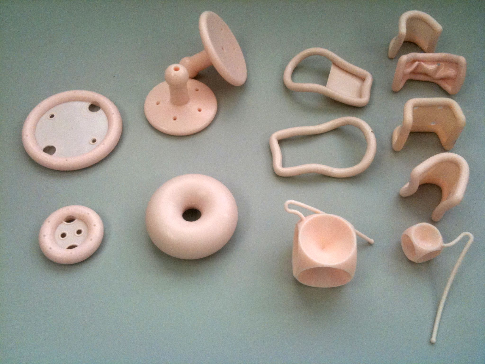

Página 5 · Prolapsos / distopia genital
Quando NÃO operar: pessário, colpocleise e a pegadinha da vida sexual
Alto risco cirúrgico: pessário ou colpocleise — a distopia não é câncer
Quando a paciente não tem condição cirúrgica — alto risco anestésico, comorbidades graves —, a lógica inteira muda. Um prolapso não é um câncer que obriga a operar; não vale pôr a vida em jogo para corrigir uma distopia. Para essas pacientes, duas saídas que fogem da cirurgia de grande porte: o pessário e a colpocleise. É o degrau conservador da escada, reservado a quem o centro cirúrgico ameaçaria mais do que o próprio prolapso.
Pessário: o instrumento que sustenta e serve para qualquer distopia
O pessário é um instrumento, geralmente de silicone, colocado por via vaginal, que empurra o útero para cima e o sustenta ali. A própria paciente aprende a colocar e retirar (precisa retirar para a higiene) e recolocar — dá autonomia. Há vários formatos, e alguns ajudam também na incontinência, segurando a bexiga lá em cima (uma ponte com o mecanismo da continência, que é assunto próprio da discussão de incontinência). O pessário serve para qualquer distopia, qualquer prolapso: é a ferramenta conservadora universal, para quem tem alto risco cirúrgico ou quando outra medida já não segura mais.
Colpocleise (Le Fort): fechar a vagina
A colpocleise é literalmente fechar a vagina da paciente: empurra-se o útero para dentro e volta-se fechando o canal. A técnica mais utilizada é a cirurgia de Le Fort — vale guardar o nome, porque a questão às vezes escreve “Le Fort” no lugar de “colpocleise”, esperando que o aluno não reconheça o sinônimo. Fechar a vagina resolve o prolapso de forma definitiva e pouco invasiva — mas tem um preço óbvio, e é dele que nasce a pegadinha.
A pegadinha-mãe: não é só idade — é idosa E sem vida sexual ativa
Aqui está a armadilha que mais derruba: a colpocleise só se indica em paciente idosa E sem vida sexual ativa. Não é só critério de idade — “tô de olho”. Fechar a vagina inviabiliza a relação sexual com penetração; por isso o critério é duplo, e o segundo braço (a vida sexual) é decisivo. E há um detalhe de postura: não é o médico que decide pela idade da paciente se ela tem ou não vida sexual — é a questão que informa. Se o enunciado diz que há vida sexual ativa, a colpocleise está fora, ponto. Se não menciona, ela é permitida.
Caso A (86 anos): sem menção de vida sexual → pessário ou colpocleise
Caso de prova: 86 anos, insuficiência renal crônica e cardiopatia grave, colo uterino totalmente exteriorizado; a histerometria mostrou colo e corpo de 3 cm. Esse colo curto é um dado proposital — prova que não é alongamento hipertrófico (o colo é pequeno, não comprido), é prolapso uterino verdadeiro. Sendo a paciente muito grave, quer-se a conduta mais simples possível → pessário ou colpocleise. E como a questão não menciona vida sexual, a colpocleise está permitida. (A traquelectomia — retirar só o colo — não cabe: o colo já é curto.)
Caso B (84 anos): tem vida sexual → colpocleise proibida, mesmo mais grave
Outro caso, e o contraste é o ponto: 84 anos, com um abaulamento na região perineal que atrapalha a vida sexual. Isso está escrito na questão → ela tem vida sexual ativa → não se marca colpocleise, mesmo sendo um quadro até mais grave que o anterior (hipertensa, diabética e dislipidêmica sem controle, já infartou, obesa, em regular estado geral). O que sobra: a histerectomia a mataria (risco altíssimo); a colporrafia anterior e posterior não resolveriam, porque é um prolapso uterino (o colo está exteriorizado); a colpocleise está bloqueada pela vida sexual → a saída é o pessário. A paciente mais grave é justamente a que não pode fechar a vagina — porque o que decide não é a gravidade, é a vida sexual.
Ramo lateral: o pessário serve para qualquer distopia — é a saída universal.
Caso A · 86 anos
colpocleise OU pessário- IRC + cardiopatia grave (alto risco cirúrgico).
- Colo totalmente exteriorizado; histerometria colo/corpo 3 cm → colo curto = não é alongamento, é prolapso uterino verdadeiro.
- A questão não menciona vida sexual → colpocleise permitida.
- Traquelectomia não cabe (colo já curto).
Caso B · 84 anos
pessário · colpocleise fora- Abaulamento perineal que atrapalha a vida sexual → tem vida sexual ativa.
- Mesmo mais grave (HAS, DM, dislipidemia sem controle, já infartou, obesa) → histerectomia a mataria.
- Colporrafia anterior/posterior não resolve (é prolapso uterino, colo exteriorizado).
- Colpocleise bloqueada pela vida sexual → sobra o pessário.

O instrumento real, em seus vários formatos (anel, Gellhorn/prato, donut, cubo). A paciente aprende a colocar e retirar — e alguns modelos ajudam também a segurar a bexiga na incontinência.
Foto de Huckfinne (own work), “An assortment of pessaries”, via Wikimedia Commons. Domínio público. Fonte: Wikimedia.
real de instrumento — pessáriosQuiz — fixação
Duas pacientes de alto risco cirúrgico com prolapso uterino exteriorizado. A paciente 1 (86a, IRC e cardiopatia grave) — a questão não menciona atividade sexual. A paciente 2 (84a, comorbidades ainda mais graves) — a questão diz que o abaulamento atrapalha a vida sexual. Sobre a colpocleise (Le Fort):
- B — a virada. O critério é duplo: idosa E sem vida sexual ativa. A paciente 2 tem vida sexual informada → colpocleise fora, mesmo sendo a mais grave; a paciente 1, sem menção, cai no critério.
- A. ignora o segundo braço do critério — o erro exato da pegadinha (“é só idade”).
- C. confunde alto risco com contraindicação à colpocleise: o alto risco é justamente o que indica a via obliterativa/conservadora.
- D. inverte tudo: a gravidade não libera fechar a vagina de quem tem vida sexual.
- Por que cair. a mente ancora em “idosa de alto risco = pode fechar” e não relê o dado da vida sexual, que é o que a questão plantou.
Na paciente 1 (86a), a histerometria revela colo e corpo de 3 cm, com o colo totalmente exteriorizado. Esse dado do “colo de 3 cm” serve para mostrar que:
- B — a virada. Colo curto (3 cm) exclui alongamento (que seria colo comprido, > 4 cm) → a exteriorização é prolapso uterino verdadeiro.
- A. inverte a medida: alongamento é colo longo, não curto.
- C. traquelectomia num colo já curto é inútil — não há colo comprido a amputar.
- D. o colo totalmente exteriorizado É o prolapso; negar isso ignora o achado.
- Por que cair. “colo exteriorizado” evoca “tirar o colo”, mas num colo curto isso não resolve — a lógica é o alto risco pedindo pessário/colpocleise.
Sobre o pessário, assinale a correta:
- B — a virada. Pessário = instrumento de silicone que empurra/sustenta, autocolocado (retirado para higiene) e útil em qualquer distopia.
- A. restringe demais — ele não é exclusivo da cúpula.
- C. errado e perigoso: precisa ser retirado periodicamente para higiene.
- D. é conservador, não cirúrgico — chamá-lo de “primeira linha cirúrgica” é contradição.
- Por que cair. parece um dispositivo “que fica lá”, mas a higiene manejada pela paciente é parte do tratamento.
O prolapso de cúpula apareceu duas vezes como ameaça — a cúpula que desce quando a fixação falha. É hora de resolvê-lo por inteiro: onde reancorar a cúpula que perdeu o útero que a sustentava.